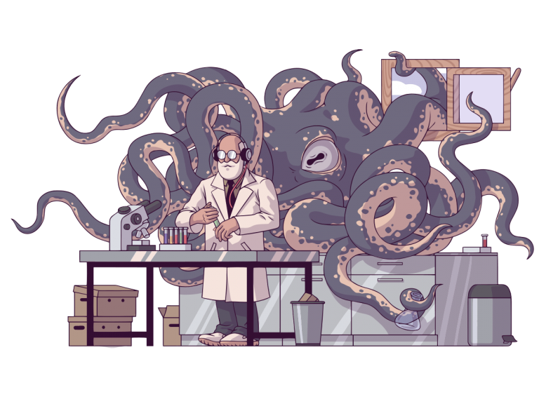

¿Cómo aplicar la investigación reproducible a proyectos de código abierto?

Los avances en la ciencia están fuertemente relacionados con la reproducibilidad en las investigaciones. Resulta muy importante lograr que otras personas puedan reproducir nuestros trabajos. ¡Imagínate la aceptación que tendría una investigación si todos los intentos posteriores de ratificar los resultados fracasanLos avances en la ciencia están fuertemente relacionados con la reproducibilidad en las investigaciones. Resulta muy importante lograr que otras personas puedan reproducir nuestros trabajos. ¡Imagínate la aceptación que tendría una investigación si todos los intentos posteriores de ratificar los resultados fracasan!